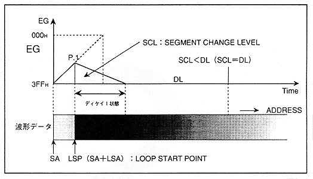

After the waveform read address reaches the loop start point, the EG transitions to the Decay 1 state (P.1). Next, when the EG value reaches DL (decay level), transition to the decay 2 state (P.2).
- When the waveform read address reaches the loop start point and the "SCL" (EG level) at this point is smaller than "DL" (decay level) (comparing with the actual EG value) (Reverse) (Figure 4.17)
Figure 4.17: Transition from attack state to decay 1 (3)

EG transitions to decay 1 state after the waveform readout address reaches the loop start point (P.1). After that, the EG value never reaches “DL” (decay level), so it keeps level 0 (EG value “3FFH”) without transitioning to the Decay 2 state.